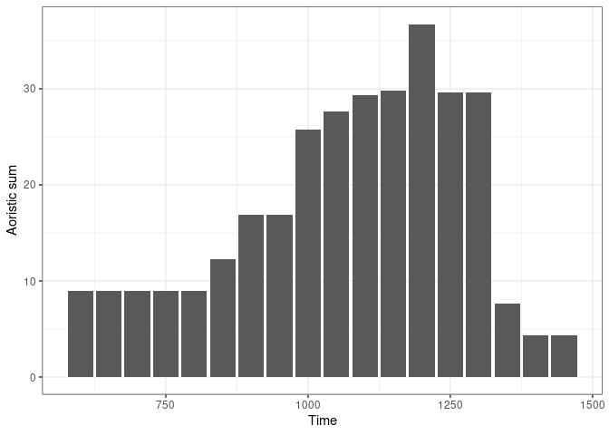
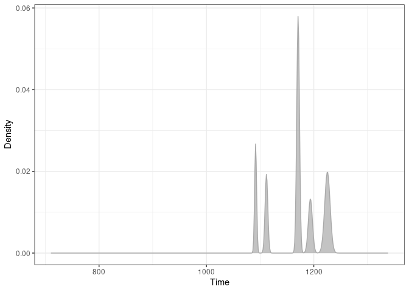
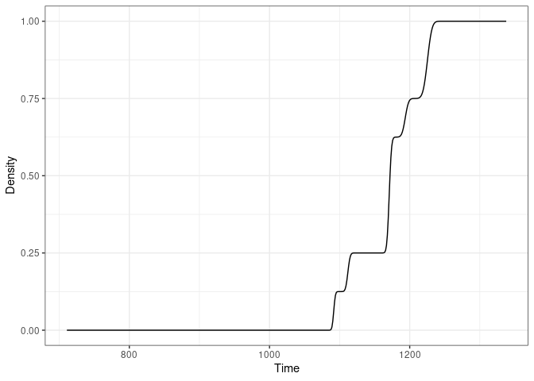

Overview
A toolkit for absolute dating and analysis of chronological patterns. This package includes functions for chronological modeling and dating of archaeological assemblages from count data. It allows to compute time point estimates (e.g. Mean Ceramic Date) and density estimates of the occupation and duration of an archaeological site.
Initial development is in progress.
Installation
You can install the released version of kairos from CRAN with:
install.packages("kairos")And the development version from GitHub with:
# install.packages("remotes")
remotes::install_github("tesselle/kairos")Usage
kairos uses a set of S4 classes that represent different special types of matrix. Please refer to the documentation of the arkhe package where these classes are defined.
It assumes that you keep your data tidy: each variable (type/taxa) must be saved in its own column and each observation (sample/case) must be saved in its own row.




Contributing
Please note that the kairos project is released with a Contributor Code of Conduct. By contributing to this project, you agree to abide by its terms.